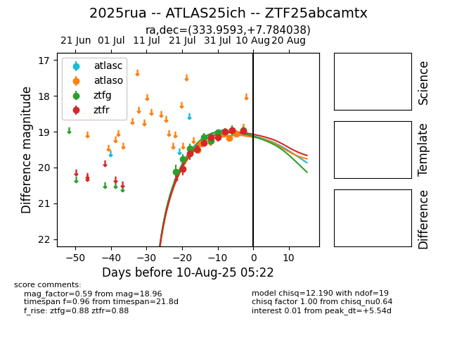

Target 2025rua at 2025-08-10 05:22, see:
FINK: fink-portal.org/2025rua
Lasair: lasair-ztf.lsst.ac.uk/objects/2025rua
ALeRCE: alerce.online/object/2025rua
TNS: wis-tns.org/object/2025rua
YSE: ziggy.ucolick.org/yse/transient_detail/2025rua
alt names
ZTF25abcamtx (ztf,fink)
2025rua (tns,yse)
ATLAS25ich (atlas)
coordinates:
equatorial (ra, dec) = (333.9593,+7.78404)
galactic (l, b) = (70.1246,-38.64438)
photometry
last atlasc=19.02, atlaso=19.05, ztfg=18.96, ztfr=18.98
1 atlasc, 5 atlaso, 9 ztfg, 9 ztfr detections
